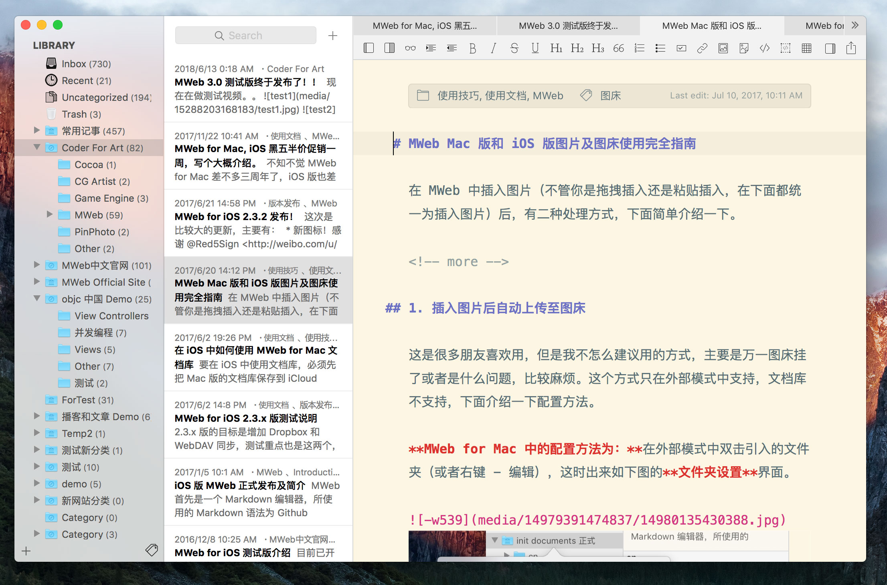
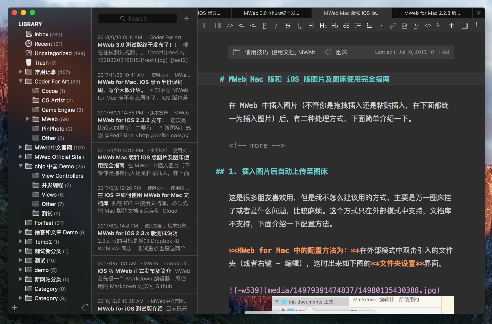
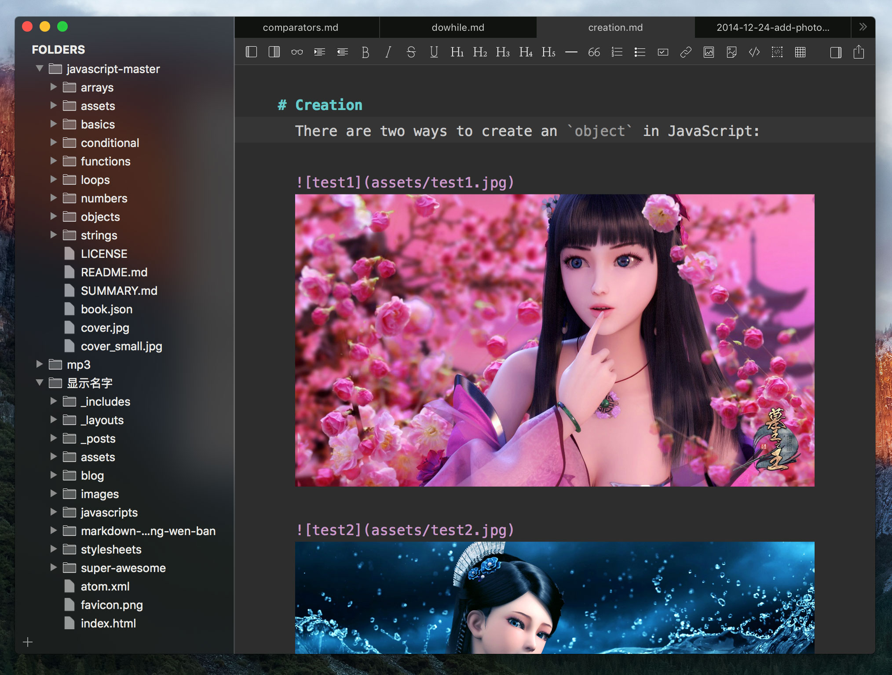
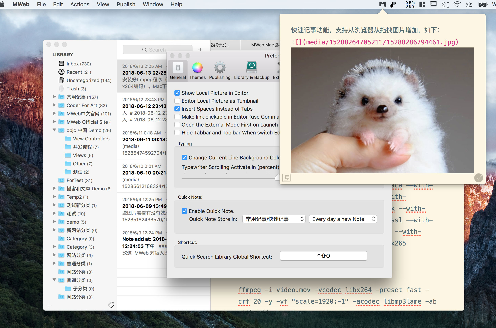
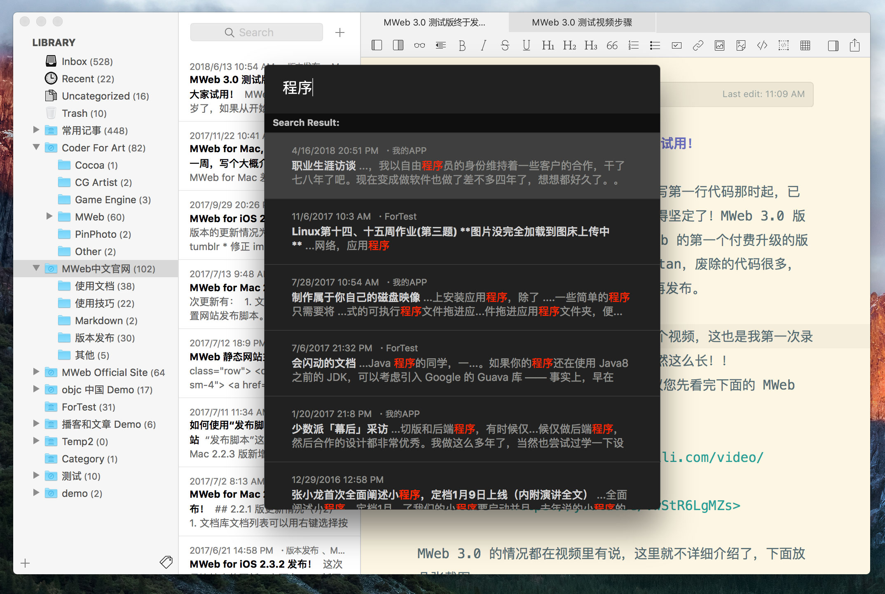

MWeb 3.0 测试版终于发布了！欢迎大家试用！
MWeb 转眼间已经快四岁了，如果从开始写第一行代码那时起，已经四周岁了，我做独立开发者的道路也变得坚定了！MWeb 3.0 版本是一个蛮重要的版本，这个版本是 MWeb 的第一个付费升级的版本。这个版本支持的最低系统是 ELCapitan，废除的代码很多，UI 几乎是重写了，所以才需要先行测试再发布。
为了方便了解新版本的功能，我录制了一个视频，这也是我第一次录制有声音的视频，录制后才发现这视频竟然这么长！！
关于 MWeb 和这次测试的详细，强烈建议您先看完下面的 MWeb 3.0 测试介绍视频！视频的网址如下：
- Bilibili：https://www.bilibili.com/video/av24789660/
- Youtube：https://youtu.be/vwStR6LgMZs
MWeb 3.0 的情况都在视频里有说，这里就不详细介绍了，下面放几张截图。需要重点说明的是：现在的版本是英文混合少量中文的，这个情况会在未来几个测试版中得到改进。
MWeb 3.0 版截图
首先是文档库

黑暗模式，同样是有黑暗模式的。

外部模式，改成双栏了。

快速记事，这个是新功能了。

快速搜索，也算是新功能。视频演示里不出来，应该是由于我把文档库放在 MWeb 专属的位置的原因，之后会改进一下。

这次 3.0 版本，有位朋友帮忙改进了 MWeb 的 Markdown 解析器
github 地址：https://github.com/randomatom/hoedown-mweb/，非常非常感谢！！然后以下是这位朋友的原话：
缘起
近期使用markdown做笔记。希望找一款软件，取代 evernote 笔记功能。
evernote转为「资料收集库」。
而 markdown 软件，用于后续深入的 整理、总结、输出。
按这个需要出发，大概需要几个特点：
- 同时支持 mac和IOS;
- 文档库管理，多级目录、tag、检索等等；
- 对markdown扩展支持比较丰富，比如代码、表格、TOC等等；
最后选择了 mweb。
使用过程中，对一些语法解析不太满意。
和作者 @oulvhai 联系之后，得知 MWeb 使用的解析库 是 Hoedown，自告奋勇修改该库。
Hoedown 的原始代码地址：https://github.com/hoedown/hoedown
mweb的问题列表： issue：https://github.com/oulvhai/MWeb-issues
主要修改几个新的功能：
- 列表之前语法之前，不需要强制 空行；
- 列表里面，自然换行，也可以解析为<br>
- bug修复：代码块中的 语法，被误以为 footnote；
其实更好的办法是换库：github的cmark库。目前活跃度很高，代码质量也很高。
https://github.com/github/cmark/tree/master/src
Hoedown 本身解析的过程，是「一行行硬解析」，没有使用AST。
还好 Markdwowm 不算复杂，这个框架勉强还能应付的过去。
后面的扩展和维护，潜力小，比较麻烦。如果要做的完全符合标准，估计还需要加一堆「补丁」。
MWeb 3.0 版下载地址
另外如果有谁知道那有不用备案的优质 CDN 购买吗？如果有，希望能联系我，非常感谢！！
如果测试过程中有什么问题或者建议，欢迎写信给我：coderforart+2333@gmail.com。也可以使用软件中的菜单：Help --> SendFeedback 功能。